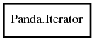

Iterator
Object Hierarchy:

Description:
Iterate over a sequence presenting all k-mers without Ns or other denegerate bases.
Namespace: Panda
Package: pandaseq-2
Content:
Properties:
Creation methods:
Methods:
-
public Iterator iterator ()
Copy an iterator to a new one, preserving its current state.
-
public unowned kmer? next ()
Advance to the next position in the sequence.
-
public void reset ()
Set an iterator back to the beginning of the sequence.